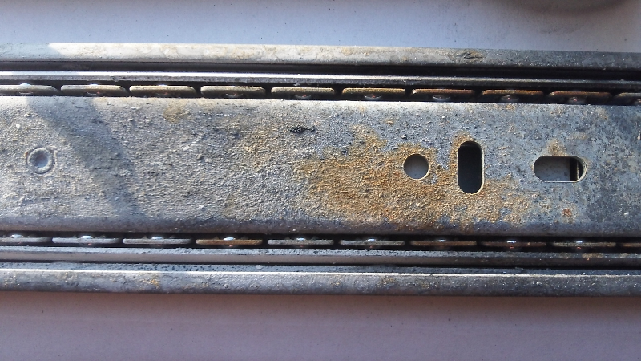

Shepard Test Stand Testing v1.1¶
This is a newer document based on this one , and you should refer to that original version if you want to see the revision history.
There was no formal testing done on version 1.1. However, work was done to ensure that the replacement Force Sensing Resistor (FSR) increased the effective range of the thrust measurement.
The testing was done in three main phases, with the first two progressing in parallel:- The mechanical system was tested as a stand-alone unit.
- The Data Acquisition (DAQ) system was tested as a stand-alone unit.
- The mechanical and DAQ systems were integrated and then tested.
Mechanical System Testing¶
Below are several videos taken during the initial mechanical tests of the test stand by J. Simmons at Dayton Diode in Dayton, Ohio.
DAQ System Testing¶
During DAQ System testing, it was discovered that the data collection rate of the system was much too low, being around 15 samples per second. This is due to the fact that the MAX31855 thermocouple amplifier takes between 70 and 100 milliseconds to convert its reading.
Integrated Testing¶
During the integrated testing, 2 more flaws were discovered in the design.
- The drawer guide used as the linear rail for the motor mount tended to foul within 30 to 50 test firings due to the fact the ball bearings were exposed to the motor exhaust particulates. Figure 1 shows the fouling.
- The Force Sensing Resistor (FSR) that was specified for the test stand was not capable of registering anything higher than 10 Newtons of force. This puts some of the higher thrust motors beyond the range that the FSR can measure.
Figure 1 - Fouling of the Drawer Guide's Bearings By Exhaust Particulates

It was also realized before the first test firing that the motor mount contact pad would have to be added. This was to ensure that the thrust of the motor was spread over the entire sensing surface of the FSR and not beyond into the substrate border.
Below are several raw videos taken during the integration tests of the test stand by J. Simmons and Jeremy Wright at Club Cyberia in Indianapolis, Indiana.
There is a safety violation in the following video when Jeremy enters one of the "Cones of Exclusion" within the range. This should be taken as an example of what not to ever do. Make sure to follow the Shepard safety procedures to prevent injury and fire during a test.
{kind=link}